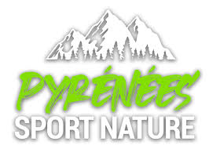
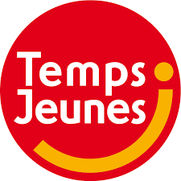
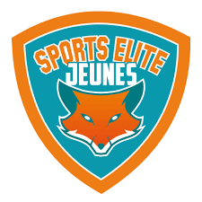

Vous venez de faire une colo avec moi ?
Pour rester en contact et savoir ce que vous avez pensé de la colo,
n'hésitez pas à remplir ce formulaire en
cliquant ici.
Cliquez sur le lieu avec votre souris pour l'ouvrir dans Google map.
| N° | Date | Durée | Organisateur | Logo | Lieu | Type de séjour | Intitulé du poste | Tranche d'âge | Nb de jeunes |
|---|---|---|---|---|---|---|---|---|---|
| Août 2024 | 18 jours | CGCV | Amsterdam, Gouda, Rotterdam, Noordwijk | 410km d'itinérance à vélo - Pays-Bas | Animateur | 13-14 ans | 16 | ||
| Juillet 2024 | 14 jours | Haute-Pyrénées Sport & Nature |  |
Saint-Pé-de-Bigorre (65) | Pension complète | Animateur SB | 8-17 ans | 37 | |
| Juillet 2024 | 12 jours | Temps-Jeunes (69) |  |
Algajola - Corse (2B) | Auto-gestion au camping | Animateur SB | 12-17 ans | 48 | |
| Juillet 2024 | 8 jours | UCPA (94) | Argelès (66) | Pension complète | Animateur SB | 14-17 ans | 52 | ||
| Juin 2024 | 18 jours | SNU Région Auvergne Rhône-Alpe (69) | Lycée Horticole de Dardilly (69) | Service National Universel - Pension complète | Tuteur de maisonnée | 15-17 ans | 84 | ||
| Avril 2024 | 8 jours | UCPA (94) | Hyères (83) | Pension complète | Animateur SB | 14-17 ans | 97 | ||
| Février 2024 | 8 jours | Temps-Jeunes (69) | Alpe du Grand Serre (38) | Pension complète | Animateur Ski | 6-11 ans | 42 | ||
| 2023-2024 | Tous les mercredis | L’escapade (69) | Chazay (69) | CLSH | Animateur | 3-8 ans | 25 | ||
| Août 2023 | 12 jours | Telligo (94) | Val Cenis (73) | Pension complète | Animateur Surveillant de Baignade | 10-15 ans | 50 | ||
| Juillet 2023 | 14 jours | Compagnon des Jours Heureux (78) | Barcelone, Tortosa, Palafrugell | Itinérance Espagne | Directeur Adjoint & SB | 14-17 ans | 41 | ||
| Juillet 2023 | 6 jours | Temps-Jeunes (69) | Saint-Nectaire (63) | Classe découverte | Animateur | 3-5 ans | 33 | ||
| 2022-2023 | Tous les mercredis | L’escapade (69) | Chazay (69) | CLSH | Animateur | 5-12 ans | 30 | ||
| Mai 2023 | 5 jours | Temps-Jeunes (69) | Parc Astérix (60) | Pension complète | Animateur | 10-17 ans | 26 | ||
| Avril 2023 | 8 jours | Temps-Jeunes (69) | Theix (56) | Pension complète | Animateur | 6-12 ans | 53 | ||
| Février 2023 | 5 jours | L’escapade (69) | Chazay (69) | CLSH | Animateur | 3-5 ans | 30 | ||
| Février 2023 | 8 jours | Temps-Jeunes (69) | Morillon (74) | Pension complète | Animateur Ski | 11-17 ans | 54 | ||
| Octobre 2022 | 5 jours | L’escapade (69) | Chazay (69) | CLSH | Animateur | 10-12 ans | 30 | ||
| Octobre 2022 | 8 jours | Temps-Jeunes (69) | St-Nectaire (63) | Pension complète | Animateur | 6-12 ans | 66 | ||
| Août 2022 | 8 jours | Djuringa (69) | Retournac (43) | Pension complète | Responsable de groupe | 6-14 ans | 94 | ||
| Juillet 2022 | 14 jours | Nouvelle Aventure Junior (13) | Calvi – Corse (2B) | Auto-gestion au camping | Assistant Sanitaire | 12-17 ans | 47 | ||
| Février 2022 | 8 jours | Sport Elite Jeunes (75) |  |
Courchevel (73) | Pension complète | Animateur Ski | 8-17 ans | 37 | |
| Octobre 2021 | 5 jours | Centro’Gones (69) | Lozanne (69) | CLSH | Stagiaire | 10-12 ans | 25 | ||
| Août 2021 | 13 jours | Djuringa (69) | Retournac (43) | Pension complète | Stagiaire | 6-14 ans | 86 |